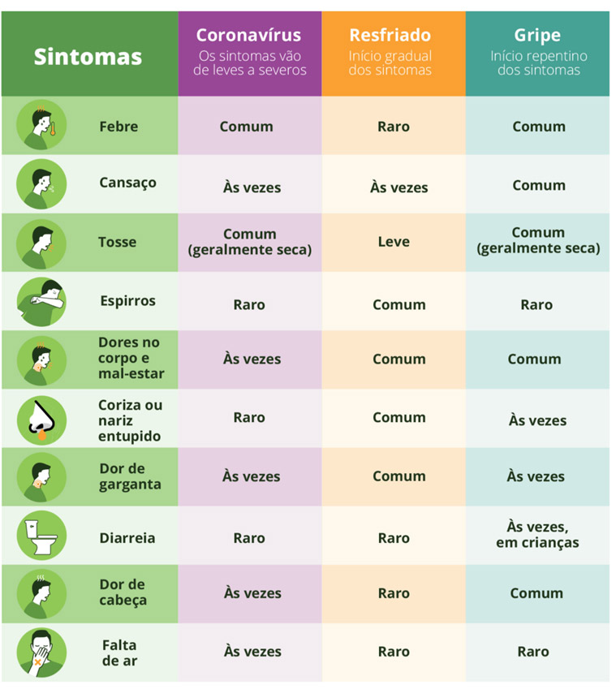

Módulo 1: Introdução ao novo coronavírus
COVID-19
Manejo da infecção causada pelo novo coronavírus
Aula 3
O que fazer se você estiver doente?
Chegamos à última aula do Módulo 1!
Sabemos que é uma grande preocupação entender exatamente o que se deve fazer mediante a apresentação dos sinais e sintomas da COVID-19. Nesse sentido, preparamos esta aula com as principais orientações a serem seguidas, no caso de sintomas.
Ao final, você vai ser capaz de:
- Conhecer os locais onde procurar ajuda;
- Aplicar as medidas de isolamento;
- Compreender o tratamento sintomático.
Lembramos, mais uma vez, que as orientações e procedimentos em relação ao coronavírus estão em constante mudança. Para se manter atualizado, consulte sempre os links e os materiais de apoio indicados neste curso.
Identificar os sinais e sintomas
Como os sintomas da COVID-19 são bastante parecidos com os da gripe, os casos devem ser avaliados individualmente. Com o aumento de casos suspeitos, muitos diagnósticos serão feitos apenas com exame clínico.
Na tabela abaixo é possível conhecer os sinais e sintomas que diferenciam um resfriado ou gripe dos sintomas da COVID-19.
Esses são sintomas de referência, podendo estar ou não presentes. É sempre importante considerar a avaliação da equipe de saúde. A presença de quaisquer desses sintomas, isolados ou associados, justificam a suspeita e a investigação para COVID-19, principalmente no contexto atual de altos números de casos.
Os sinais e sintomas do coronavírus são principalmente respiratórios, semelhantes aos de um resfriado. Podem causar, também, infecção do trato respiratório inferior, como as pneumonias.
Vamos relembrar os sintomas comuns ocasionados pela COVID-19?
- Febre (>37,8ºC);
- Tosse;
- Dispneia (falta de ar);
- Mialgia e fadiga;
Sintomas leves
Como os sintomas da COVID-19 são bastante parecidos com os da gripe, os casos devem ser avaliados individualmente. Com o aumento de casos suspeitos, a disponibilidade de testes laboratoriais para a confirmação da doença pode ser insuficiente, e muitos diagnósticos poderão ser feitos a partir de critérios clínicos e epidemiológicos.
Os profissionais de saúde, que estão sob alto risco e não podem deixar de atender os pacientes, devem ser testados em caso de sintomas.
A maioria dos casos de COVID-19 são assintomáticos ou apresentam sintomas leves a moderados. A orientação é que todos os pacientes com suspeita de infecção pelo SARS-CoV-2 busquem atendimento. O médico irá avaliar o paciente e verificar a melhor conduta a ser tomada. A maioria dos casos pode ser tratada em casa.
Segundo a Organização Pan-Americana da Saúde, 81% dos infectados pelo novo coronavírus têm sintomas leves da doença, como tosse e coriza; 14% apresentam sintomas graves e 5% evoluem para um quadro crítico, que pode levar à morte.
Sintomas graves
A COVID-19 exige maior atenção para os grupos de risco, como idosos, pessoas com doenças respiratórias, imunossuprimidos, pessoas com diabetes, cardiopatias e hipertensão, gestantes e mulheres com até 45 dias de pós-parto.
Pessoas do grupo de risco e/ou que apresentem sintomas mais intensos, como dificuldade para respirar, febre alta e mal-estar devem procurar imediatamente a unidade de atendimento em saúde mais próxima.
Conheça aqui alguns canais de atendimento que podem orientar suas dúvidas:
- Para esclarecer dúvidas, ligue no número 136, do Ministério da Saúde;
- Procure o site da Secretaria de Saúde da sua cidade para informações sobre onde buscar atendimento. Normalmente será a Unidade Básica de Saúde mais próxima de você.
Saiba mais:
Saiba mais detalhes em: Tem dúvidas sobre o coronavírus? O Ministério da Saúde de responde!
Isolamento Domiciliar
Saiba como deve ser o isolamento domiciliar de casos confirmados de coronavírus:
Saiba mais:
Tratamento
Apesar da ocorrência de pesquisas e polêmicas sobre o possível uso de determinados medicamentos disponíveis, ainda não foi confirmado nenhum medicamento para tratar a doença. Por isso, o tratamento é padronizado e válido para qualquer “Síndrome Gripal”. Aprofundaremos o tratamento de casos mais graves nos módulos a seguir.
Combatendo fake news
Fake news são notícias falsas que circulam pela internet. Em momentos de crise, como a pandemia do coronavírus, o volume de informações erradas ou mentirosas aumenta, principalmente nas redes sociais. Mas as redes sociais também são canais onde há informação confiável! Você pode colaborar na divulgação de informações corretas, seguindo e compartilhando canais seguros - e ainda aproveita para se manter atualizado no assunto. Esses são alguns desses canais:
- @rodrigostabeli - biomédico e pesquisador da Fiocruz
- Nesse vídeo aqui ele explica sobre a doença COVID-19
Páginas especiais sobre coronavírus
Chegamos ao fim da aula
Você terminou a Aula 3 do Módulo 1 do curso COVID-19
Parabéns! Você chegou ao final do módulo e agora será capaz de dar as primeiras orientações para quem suspeita estar com a doença.
O próximo módulo é voltado para profissionais de saúde que atuam no atendimento nas Unidades Básicas de Saúde para a COVID-19.